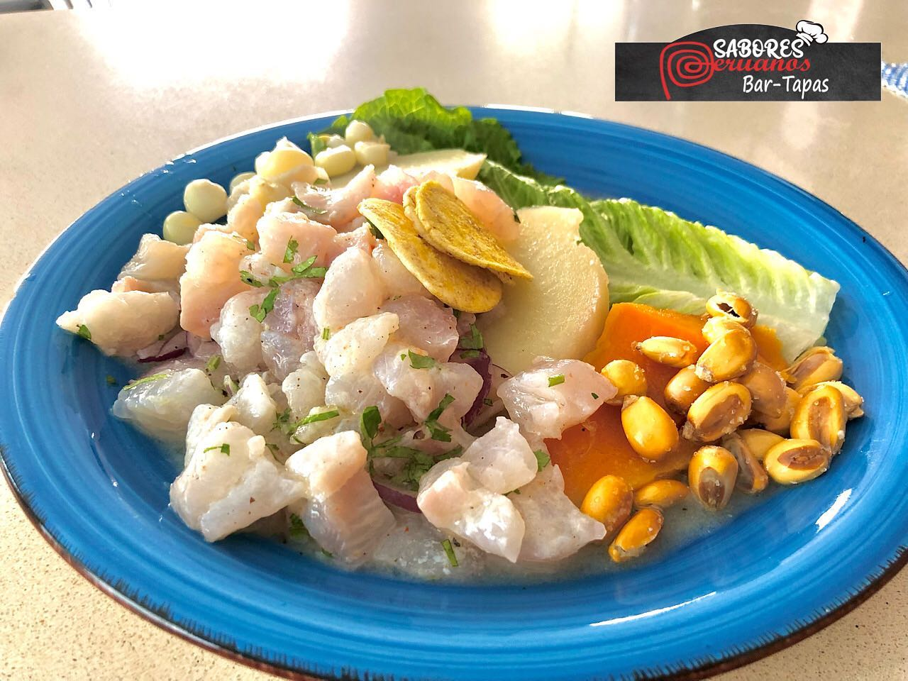

Sabores Peruanos - Bar Tapas
Nuestra Historia
Sabores Peruanos nació en 2021 con la idea de traer los sabores auténticos del Perú a nuestra comunidad. Desde entonces, hemos sido un espacio donde la comida une culturas y crea momentos inolvidables.
Conoce a la dueña
Detrás de cada plato está Silvia Fiestas, una apasionada chef peruana que decidió compartir las recetas tradicionales de su familia. Su amor por la cocina se refleja en cada detalle del restaurante.

Platos Destacados



Ver menú completo
¿Dónde estamos?
Nos encontramos en el corazón de la ciudad, ofreciendo lo mejor de la gastronomía peruana. ¡Ven a visitarnos y vive la experiencia Sabores Peruanos!